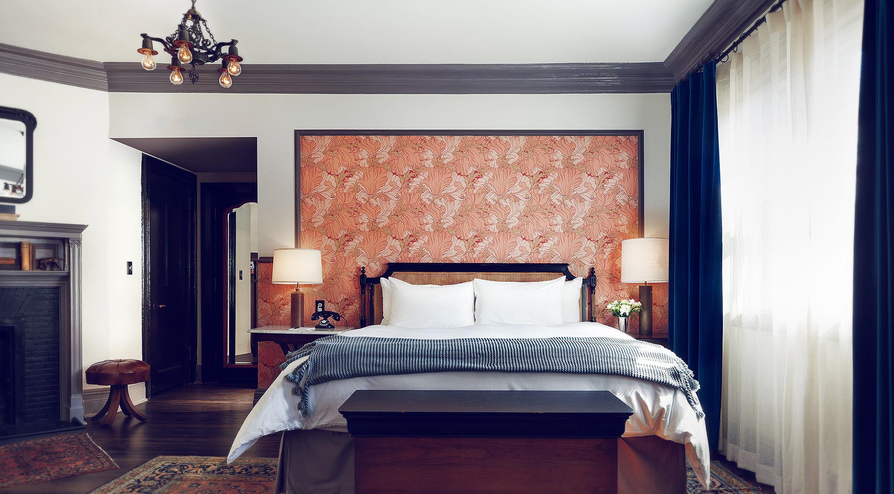
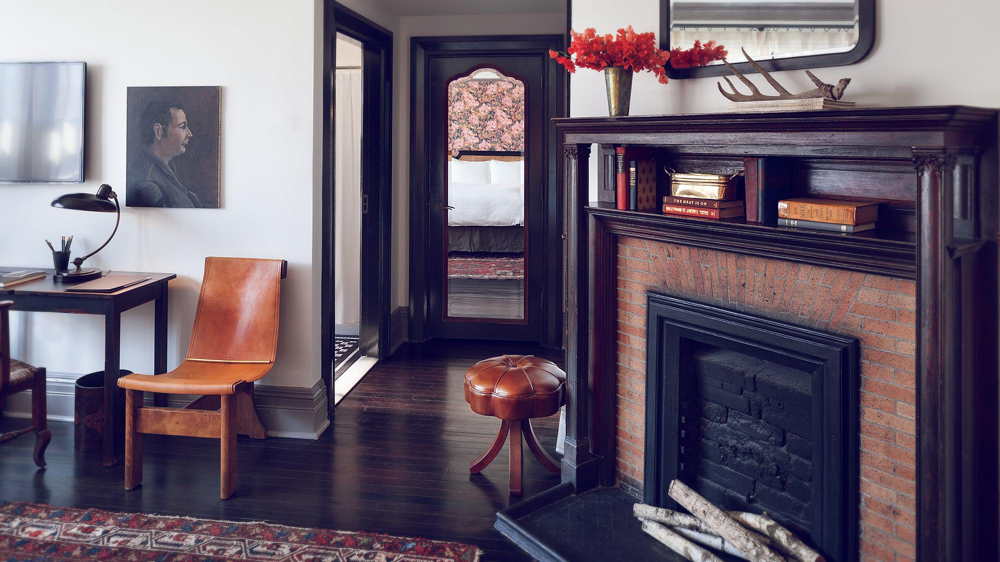
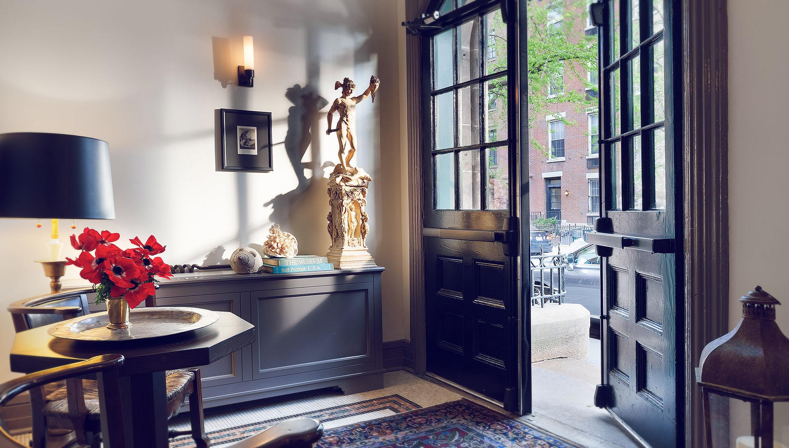
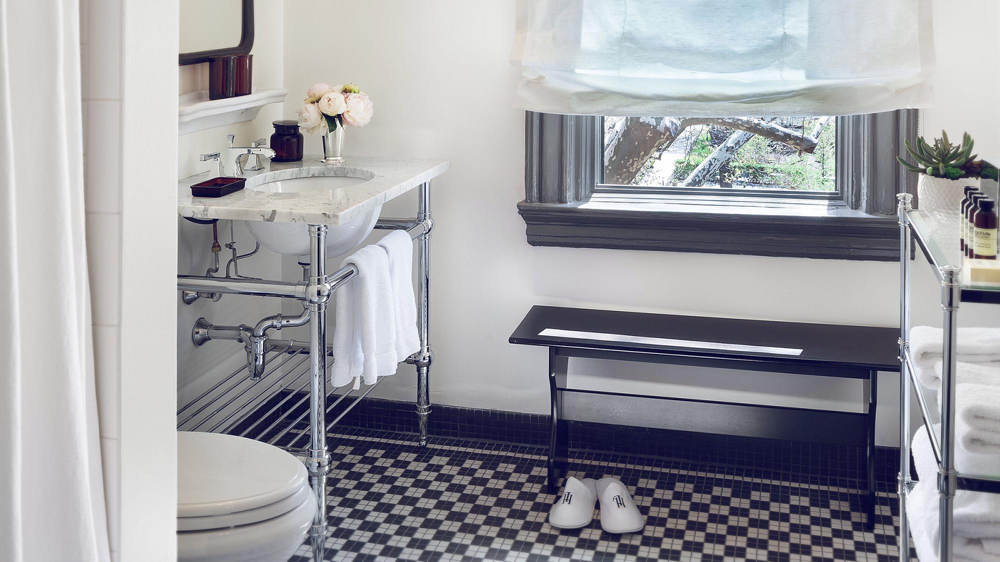
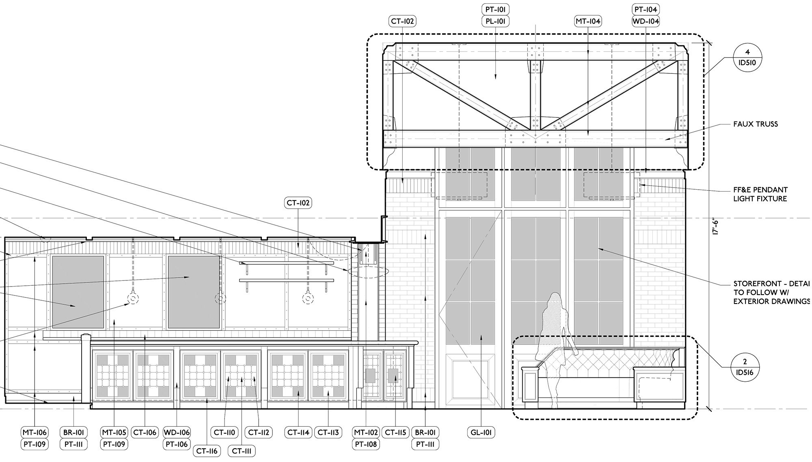
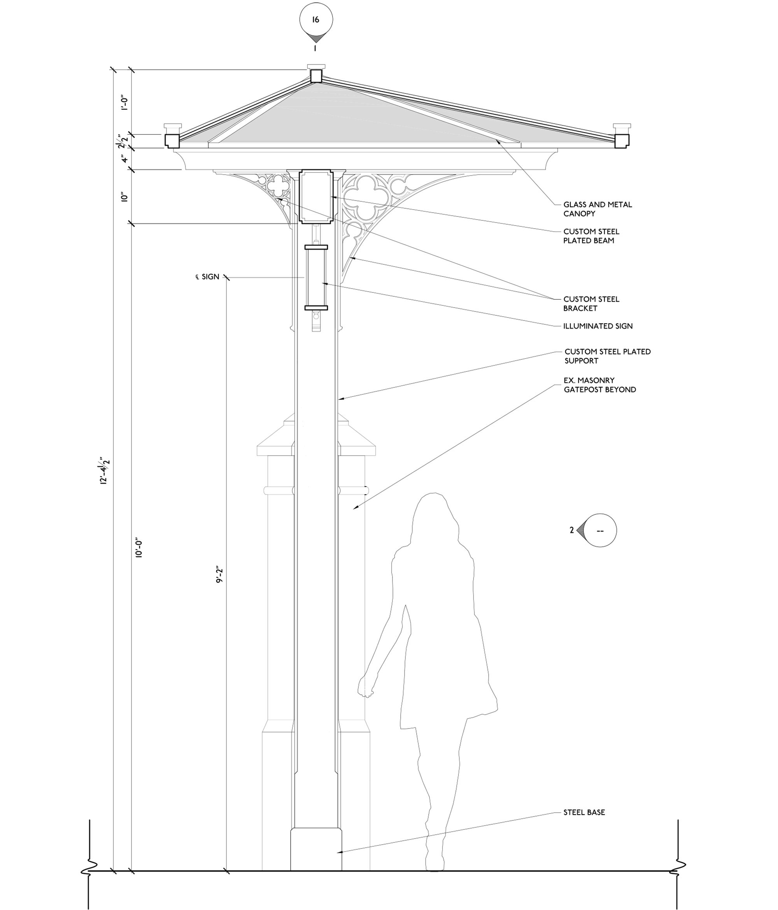
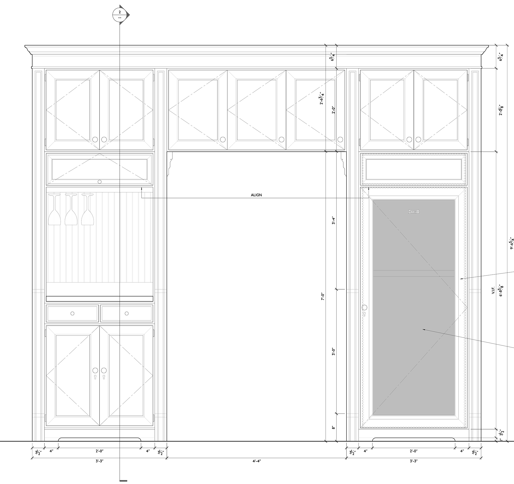

Renovating the front courtyard involved extensive work with New York's Landmarks Preservation Commission.
(Click images to zoom. Click circle to return to top.)
(Click images to zoom. Click circle to return to top.)

Inside, exposing the bones of the original building were an exciting prospect in this project, but almost all original surfaces had to be replaced due to disrepair.

As a result, most of what one sees is actually new construction: from the brick bearing walls to the mosaic tile floor to the wood storefront to the faux steelwork.
A great bit of input from fabricators and consultants went into detailing these elements.
A great bit of input from fabricators and consultants went into detailing these elements.

The hotel itself is small, but due to the geometric irregularity of the building and non-repetitive floors, each of the 53 rooms had to be individually designed.


FF&E was all either salvaged or designed from scratch.







